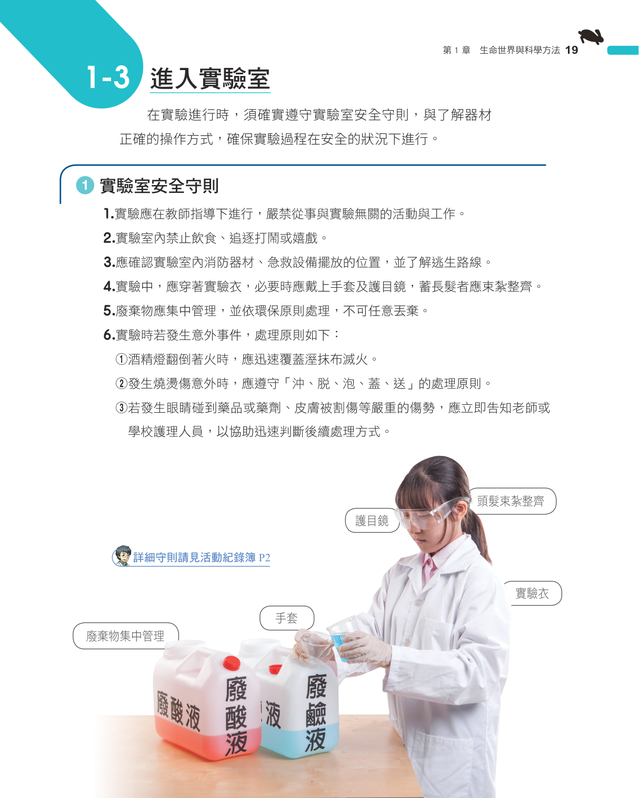
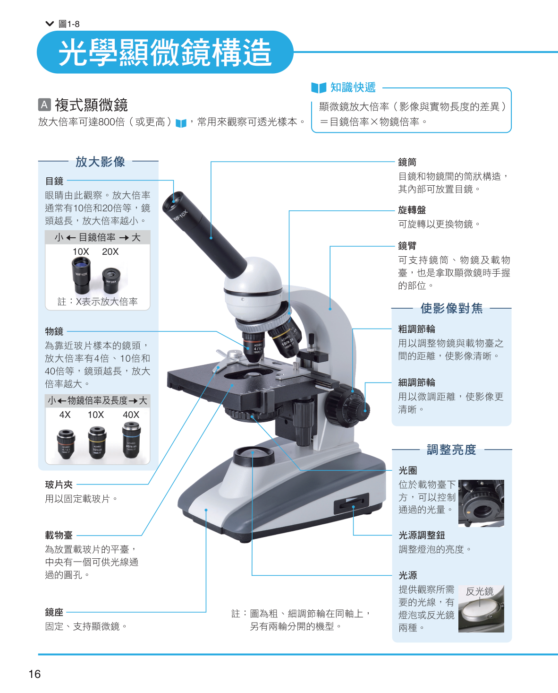
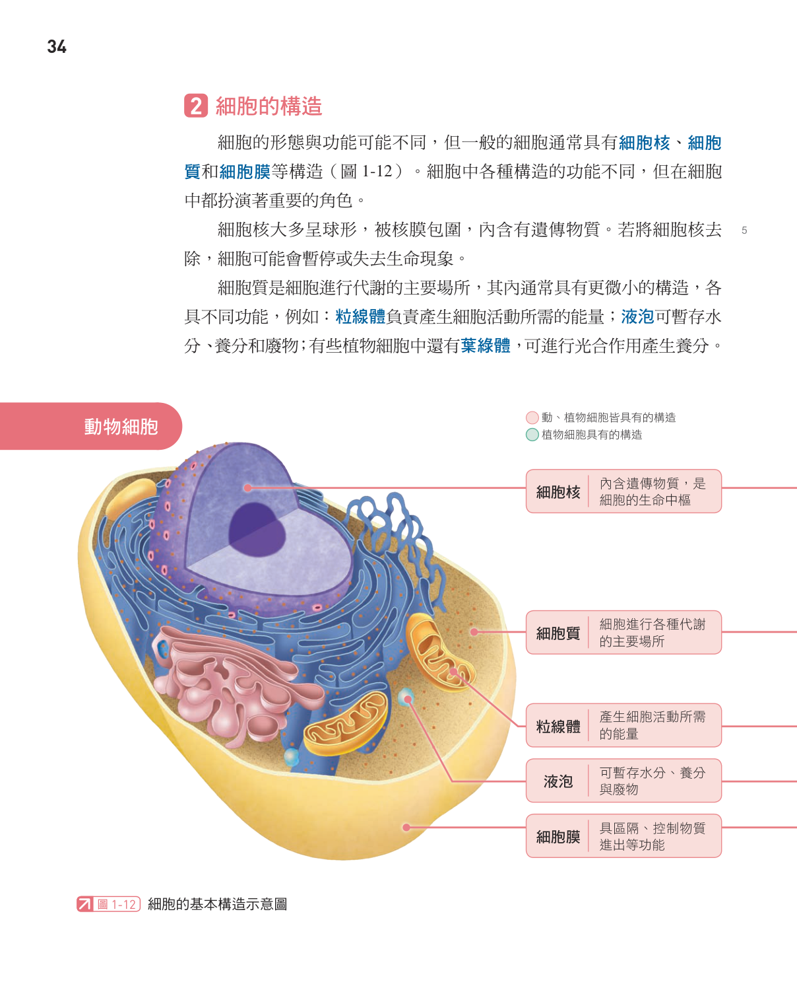
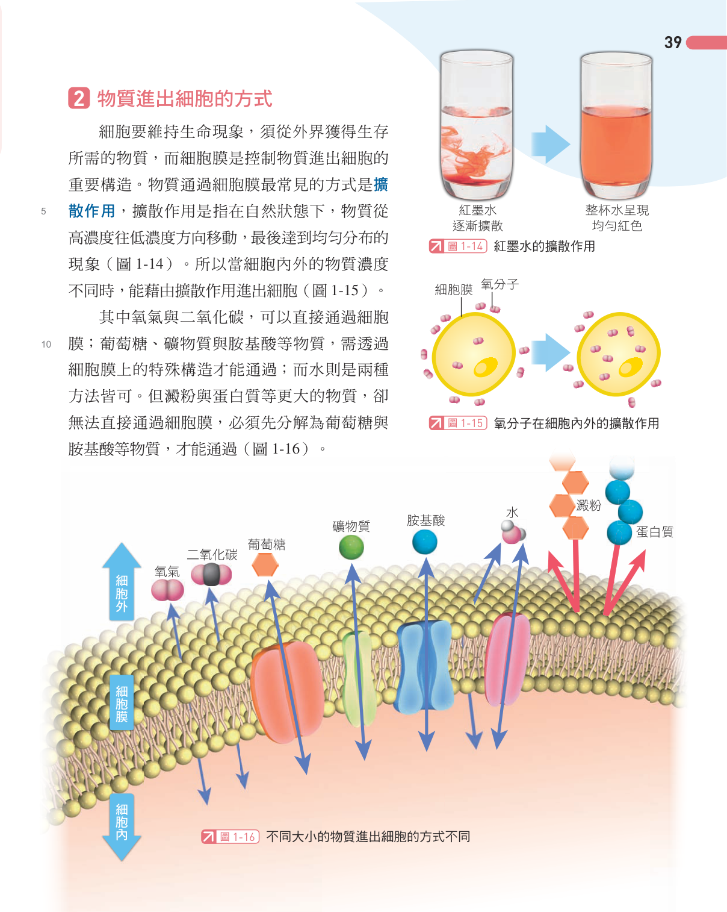
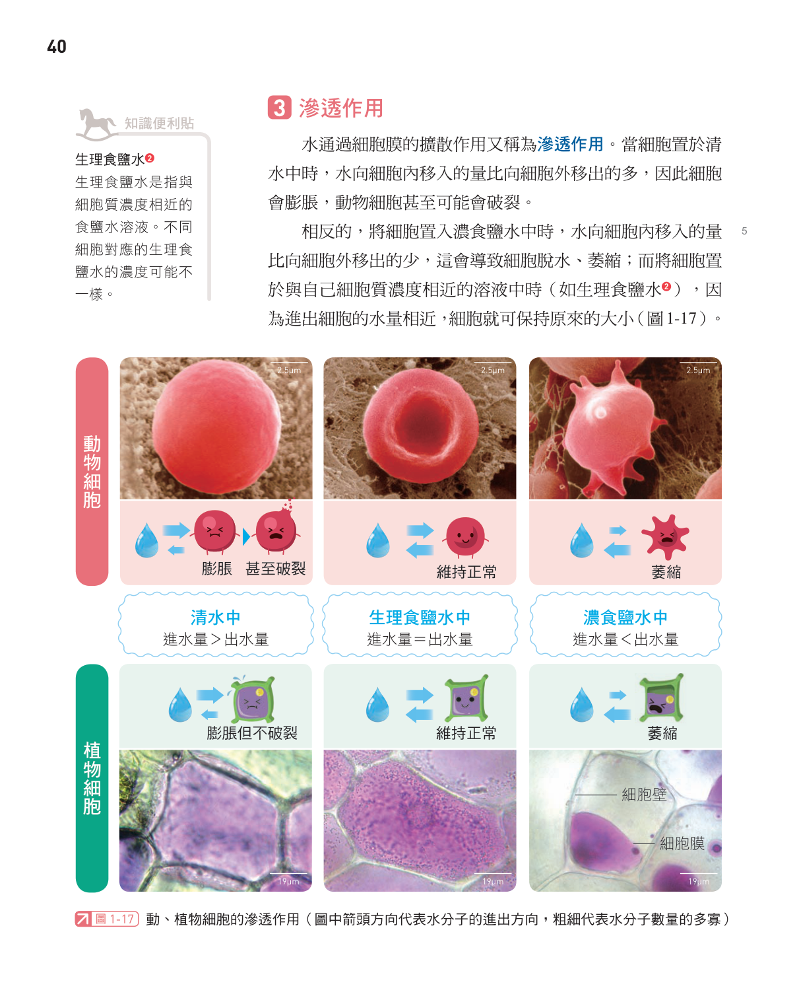
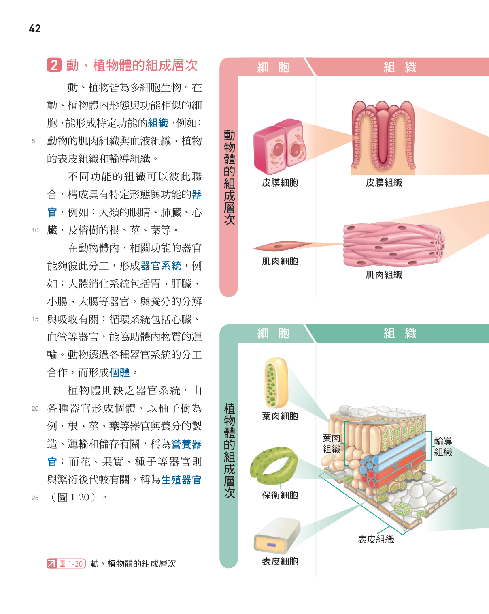

1-1 科學的探索方法
科學方法的流程
科學家遇到生活中的疑問(例如「為什麼吐司容易發霉？」「饅頭切面為什麼有小洞？」)時,會依循一套有邏輯的步驟尋找答案,稱為科學方法:觀察 → 提出問題 → 參考文獻資料 → 形成假說 → 設計並進行實驗 → 分析實驗結果 → 提出結論。若假說通過許多科學家多次重複驗證且被接受,就可能發展成學說;但學說並非永遠不變,只要出現新技術或新證據,仍可能被修正或推翻。
設計實驗時,要把觀察對象分成實驗組(接受操作處理的一組,例如放進冰箱的吐司)與對照組(作為比較基準的一組,例如放在室溫的吐司)。影響結果的因素稱為變因,分成三種:
| 變因種類 | 意義 | 吐司發霉實驗中的例子 |
| 操作變因 | 實驗組與對照組之間刻意設定不同的那項因素(每次實驗只能設定1項) | 溫度(冰箱4℃ vs 室溫25℃) |
| 控制變因 | 除了操作變因外,其餘必須保持相同的所有因素 | 吐司大小、溼度、包裝方式等 |
| 應變變因 | 實驗後需要測量或比較的項目(即實驗結果) | 吐司發霉的比例或面積 |
實驗應重複進行多次以減少誤差,結果最好整理成圖表(標明標題、單位、刻度),才能清楚判斷是否支持假說。
實驗室安全守則
- 實驗須在教師指導下進行,不做與實驗無關的事;實驗室內禁止飲食、追逐打鬧。
- 進入實驗室應先了解消防器材、急救設備位置與逃生路線。
- 操作時應穿實驗衣,必要時戴護目鏡與手套,長髮要束紮整齊。
- 廢棄物應集中管理,依環保原則處理,不可任意丟棄。
- 意外處理:酒精燈翻倒著火,立刻用溼抹布覆蓋滅火;燒燙傷依「沖、脫、泡、蓋、送」處理;藥品噴入眼睛或嚴重外傷應立刻告知老師或護理人員。
顯微鏡的使用
光學顯微鏡是觀察細胞等微小構造最常用的工具,依用途主要分成複式顯微鏡與解剖顯微鏡兩種;放大倍率的計算方式都是「總放大倍率＝目鏡倍率 × 物鏡倍率」。除了光學顯微鏡,還有放大倍率更高的電子顯微鏡(可達百萬倍),用來觀察比細菌更微小的病毒等構造。
| 比較項目 | 複式顯微鏡 | 解剖顯微鏡 |
| 適合觀察的標本 | 製成薄片、可透光的玻片標本 | 玻片標本或立體實物皆可(不需透光) |
| 放大倍率 | 較高(可達1000倍以上) | 較低(約數倍到數十倍) |
| 成像與實物的關係 | 平面影像,上下顛倒、左右相反 | 立體影像,方向與實物相同 |
| 常見構造 | 目鏡、物鏡、鏡筒、鏡臂、旋轉盤、粗∕細調節輪、載物臺、玻片夾、光圈、光源(或反光鏡)、鏡座 | 目鏡、物鏡、倍率調整輪、載物板(黑∕白∕透明)、固定夾、眼距調整器、眼焦調整器、光源、鏡座 |
操作要點:拿取顯微鏡時一手握鏡臂、一手托鏡座保持直立;應先用低倍率物鏡對準載物臺圓孔、以粗調節輪對焦後,再切換高倍率物鏡並只用細調節輪微調(避免撞壞鏡頭);鏡頭若有髒污,只能用拭鏡紙擦拭。移動玻片時,視野中影像的移動方向與玻片實際移動的方向相反。



小節練習
1. 小明想探討「溫度是否會影響種子發芽的速度」，他依序進行了下列哪一組步驟，才符合正確的科學方法？
- (A)提出假設→觀察現象→設計實驗→提出問題→做結論
- (B)觀察現象→提出問題→提出假設→設計實驗驗證→分析數據並下結論
- (C)設計實驗→觀察現象→提出假設→提出問題→做結論
- (D)提出問題→設計實驗→觀察現象→提出假設→做結論
2. 小華想知道「光照是否會影響豌豆的生長速度」，設計了甲、乙兩組豌豆栽培實驗，除了光照的有無不同之外，兩組的澆水量、溫度、豌豆品種、土壤種類等條件都相同，請問本實驗的操作變因是什麼？
- (A)澆水量
- (B)溫度
- (C)豌豆品種
- (D)光照的有無
3. 小美使用酒精燈進行加熱實驗，實驗結束後想要熄滅火焰，下列哪一種方式最正確？
- (A)直接用嘴巴將火吹熄
- (B)用大量清水直接潑澆火焰
- (C)用燈罩從火焰側邊輕輕蓋熄
- (D)放著讓酒精自然燒完後再離開
4. 小杰使用複式顯微鏡，先以低倍率物鏡找到觀察目標並移到視野中央後，再轉換成高倍率物鏡，此時發現影像有些模糊，請問他應該轉動下列哪一項構造來調整影像，才不會有撞壞玻片或鏡頭的風險？
- (A)細調節輪
- (B)粗調節輪
- (C)光圈
- (D)旋轉盤
1-2 生命現象
生物與非生物
能夠表現出生命現象的個體稱為生物,例如松鼠、豆苗;不能表現生命現象的物體稱為非生物,例如石頭、空氣、水。生物大多需要陽光、空氣、水與養分才能維持生命現象,其中陽光提供生物所需能量的最終來源——即使是生活在無光深海的魚類,牠們攝食的能量也大多間接來自陽光(透過食物鏈傳遞)。
生命現象有哪些
| 生命現象 | 說明 | 例子 |
| 代謝(新陳代謝) | 生物體內的分解與合成反應,通常伴隨能量轉換,用來維持生命機能 | 動物消化食物吸收養分;植物行光合作用製造養分 |
| 生長與發育 | 生長指細胞增大或數目變多、個體由小變大;發育指形態或功能逐漸成熟 | 種子萌芽長出根莖葉;小動物長大成熟 |
| 感應與運動 | 能察覺環境變化並產生對應反應,達到躲避敵人、覓食等目的 | 含羞草被碰觸會閉合;羚羊看到獵豹會逃跑;植物向光生長 |
| 生殖(繁殖) | 由親代產生子代的過程,用來延續生物族群 | 動物產卵育幼;植物開花結果產生種子 |
具備以上四類生命現象的個體才是生物;只要少了任一項持續且完整的表現,就不能算是生物(例如鐘乳石、石筍雖然會「長大」,卻不具備代謝、感應等其他生命現象,屬於非生物)。
生物圈
地球上所有生物和牠們賴以生存的環境,合稱生物圈。生物圈的範圍以海平面為基準,大約包含上、下各一萬公尺的範圍,相對於地球半徑(約6371公里)來說,只佔薄薄一層,而且範圍會隨著生物的發現與滅絕而變動。多數生物集中生活在溫暖、水分充足的地表與淺水環境(如熱帶雨林、珊瑚礁);而在沙漠、深海、極地等嚴苛環境中,生物種類與數量較少,但這些生物往往演化出特殊構造來適應,例如仙人掌以肥厚的莖儲水、針狀葉減少水分散失;蝙蝠用回聲定位在黑暗洞穴中活動;有些深海魚類能發光以利辨識與獵食。

小節練習
1. 小安在桌上放了四樣東西：發芽中的綠豆、烤熟的雞腿、一顆鑽石、一塊木炭，請問哪一項最能表現出「生物」才具有的生命現象？
- (A)發芽中的綠豆
- (B)烤熟的雞腿
- (C)一顆鑽石
- (D)一塊木炭
2. 小伶在家中觀察含羞草，發現只要用手輕輕碰觸葉片，葉片就會立刻閉合，過一陣子後才慢慢張開，這種現象最主要表現了生物的哪一種生命現象？
- (A)代謝
- (B)生殖
- (C)感應與運動
- (D)生長與發育
3. 深海中的角高體金眼鯛生活在完全沒有陽光照射的黑暗海域，請問牠們最主要是依賴下列哪一項條件而能持續存活？
- (A)充足的陽光
- (B)溫暖穩定的水溫
- (C)極高濃度的氧氣
- (D)從海洋上層沉降下來的生物碎屑作為食物養分來源
4. 老師請同學列出可以用來判斷物體是否為生物的特徵，下列哪一項其實「不能」用來判斷該物體是否為生物？
- (A)是否能表現代謝作用
- (B)摸起來是否具有溫度
- (C)是否能表現生長與發育
- (D)是否能進行生殖
1-3 細胞的發現與構造
細胞的發現與細胞學說
約350多年前,英國科學家虎克(Robert Hooke)利用自製的複式顯微鏡觀察軟木栓薄片,發現許多蜂窩狀的小格子,將它們命名為「細胞(cell)」——他是史上第一位描述細胞的科學家,但實際上他看到的只是植物細胞死亡後留下的細胞壁空腔,並非完整的細胞。之後歷經雷文霍克(改良顯微鏡、發現細菌)、布朗(發現植物細胞內的核)、許萊登(提出植物體由細胞組成)、許旺(提出動物體由細胞組成)等科學家接力研究,終於歸納出細胞學說:「細胞是組成生物體構造與功能的基本單位」。後來科學家菲爾紹更提出「每一個細胞都來自另一個細胞」的觀念,使細胞學說更加完整。
細胞的形態與功能
不同細胞因為功能不同,常有不同的形態。例如動物的神經細胞有細長突起以傳遞訊息;口腔皮膜細胞呈扁平狀以保護內部;紅血球呈雙凹圓盤狀以利運送氧氣;肌肉細胞細長,能收縮以引起運動。植物的表皮細胞扁平且排列緊密,具保護功能;保衛細胞呈半月形、兩兩成對圍成氣孔,能控制氣體進出。
動物細胞與植物細胞的構造比較
大多數細胞都具有細胞核(內含遺傳物質,是細胞的「生命中樞」,控制細胞代謝;若失去細胞核,細胞會逐漸死亡)、細胞質(內含粒線體、液泡等胞器,是代謝作用進行的場所;粒線體能把養分轉換成能量,液泡可儲存水分、養分與廢物)、細胞膜(區隔細胞內外環境,控制物質進出)。植物細胞在細胞膜外側還多了一層由纖維素構成的細胞壁,能保護並維持細胞形狀;部分植物細胞含有葉綠體,可行光合作用製造養分。
| 構造 | 功能 | 動物細胞 | 植物細胞 |
| 細胞核 | 控制細胞代謝,含遺傳物質 | 有 | 有 |
| 細胞質(含粒線體) | 代謝場所;粒線體產生能量 | 有 | 有 |
| 液泡 | 儲存水分、養分、廢物 | 有(通常較小) | 有(通常較大,可維持形狀) |
| 細胞膜 | 控制物質進出、區隔內外環境 | 有 | 有 |
| 細胞壁 | 保護並維持細胞形狀 | 無 | 有(纖維素構成) |
| 葉綠體 | 行光合作用,製造養分 | 無 | 部分綠色細胞才有 |


小節練習
1. 下列關於細胞發現史的敘述，何者正確？
- (A)虎克在軟木塞中看到的格狀構造是仍然活著的細胞
- (B)雷文霍克最早提出了完整的細胞學說
- (C)布朗最早發現了細胞壁的存在
- (D)許旺與許萊登分別根據動、植物組織的觀察，提出「生物體至少由一個以上細胞組成」的看法，為細胞學說最早的雛形
2. 小晴比較動物細胞和植物細胞的構造，下列敘述何者正確？
- (A)植物細胞具有細胞壁，動物細胞則沒有細胞壁
- (B)動物細胞具有葉綠體，植物細胞則沒有葉綠體
- (C)只有植物細胞才具有細胞核
- (D)只有動物細胞才具有粒線體
3. 小捷觀察到某種人體細胞的外形呈現雙凹圓盤狀，這種細胞最可能具有下列哪一種功能？
- (A)收縮進而產生運動
- (B)運送體內的氧氣
- (C)傳遞神經訊息
- (D)保護身體表面
4. 某種細胞需要消耗大量能量以維持強烈的收縮功能，推測這種細胞內何種構造的數量可能特別多？
- (A)細胞壁
- (B)液胞
- (C)粒線體
- (D)細胞核
1-4 細胞所需的物質與物質進出方式
細胞是由更小的物質組成
細胞雖然微小,但仍是由更小的分子(如水、葡萄糖、蛋白質)組成,而這些分子又是由更基本的原子(碳C、氫H、氧O、氮N等)依特定方式排列而成。原子是構成物質的最小單位;多個葡萄糖分子相連可形成澱粉或纖維素,多個胺基酸分子相連則形成蛋白質——「原子 → 分子 → 細胞」是理解生命物質組成的重要層次。
擴散作用
擴散作用是指物質由高濃度區域往低濃度區域移動,最後均勻分布的現象,是物質進出細胞最常見的方式。細胞膜上物質通過的方式可分成三種情形:
| 通過方式 | 物質舉例 |
| 可直接通過細胞膜 | 氧氣、二氧化碳 |
| 需藉細胞膜上特殊蛋白質協助才能通過 | 葡萄糖、胺基酸、礦物質 |
| 兩種方式皆可(直接擴散或蛋白質協助) | 水 |
| 無法通過細胞膜(需先分解成小分子) | 澱粉、蛋白質等大分子 |
滲透作用
滲透作用特指水分子以擴散方式通過細胞膜的現象。細胞會依所在溶液的濃度不同,發生失水或吸水,進而改變形狀:
| 溶液環境 | 動物細胞(如紅血球) | 植物細胞 |
| 純水(濃度低於細胞內) | 進水量大於出水量,細胞膨脹,最後可能破裂 | 因有細胞壁保護,只會略微膨脹,不會破裂 |
| 生理食鹽水(濃度與細胞質相近) | 進出水量大致相同,細胞形狀不變 | 細胞形狀不變 |
| 濃食鹽水(濃度高於細胞內) | 出水量大於進水量,細胞脫水萎縮 | 細胞萎縮,細胞膜與細胞壁分離 |
擴散和滲透的差別在於:擴散作用可以是任何物質由高濃度往低濃度移動;滲透作用則專指「水」通過細胞膜的擴散現象。


小節練習
1. 俗語「一家烤肉，萬家香」是形容烤肉的香味會逐漸擴散到周圍各處，讓大家都聞得到，這種現象和下列何種作用的原理最相似？
- (A)光合作用
- (B)擴散作用
- (C)呼吸作用
- (D)消化作用
2. 將人體的紅血球分別放入高濃度食鹽水與蒸餾水（純水）中，一段時間後最可能觀察到下列哪一種結果？
- (A)放入高濃度食鹽水中，紅血球會膨脹變大
- (B)放入蒸餾水中，紅血球會萎縮變小
- (C)兩種情況下紅血球的形狀都不會改變
- (D)放入高濃度食鹽水中，紅血球會因水分滲出而萎縮；放入蒸餾水中，紅血球會因水分滲入而膨脹，甚至可能破裂
3. 下列哪一種物質可以直接通過細胞膜進出細胞，不需要依靠細胞膜上的特殊構造幫忙？
- (A)氧氣
- (B)葡萄糖
- (C)胺基酸
- (D)礦物質
4. 請將下列構成生物體的成分，依照大小由小到大排列：甲、氫原子；乙、葡萄糖分子；丙、細胞；丁、澱粉分子
- (A)甲丙丁乙
- (B)丙甲乙丁
- (C)甲乙丁丙
- (D)丁甲乙丙
1-5 從細胞到個體
單細胞生物與多細胞生物
有些生物僅由一個細胞構成,這一個細胞就能表現出完整的生命現象,稱為單細胞生物,例如草履蟲、變形蟲、新月藻、眼蟲等。有些生物則由許多細胞組成,需要靠不同功能的細胞分工合作才能表現完整的生命現象,稱為多細胞生物,例如人類、榕樹、蝴蝶等。
多細胞生物的組成層次
多細胞生物體內,構造與功能相似的細胞會集合成組織;不同的組織再組合成具有特定功能的器官;動物體內,功能相關的器官還會進一步組成器官系統,各器官系統分工合作,才形成一個完整的個體。植物體則沒有器官系統這個層次,由器官直接組成個體。
| 組成層次 | 動物(以人體為例) | 植物(以植株為例) |
| 細胞 | 皮膜細胞、肌肉細胞 | 表皮細胞、保衛細胞、輸導組織細胞 |
| 組織 | 皮膜組織、肌肉組織 | 表皮組織、輸導組織、葉肉組織 |
| 器官 | 胃、肝臟、小腸 | 根、莖、葉(營養器官);花、果實、種子(生殖器官) |
| 器官系統 | 消化系統、呼吸系統、循環系統(植物沒有這個層次) | —(無此層次) |
| 個體 | 完整的人體 | 完整的植株 |
植物的器官依功能可分成兩大類:營養器官(根、莖、葉)負責養分的吸收、運輸與製造;生殖器官(花、果實、種子)則負責繁衍下一代。


小節練習
1. 人體是由許多不同層次逐漸組成的構造所構成，請問下列何者是正確的組成層次順序（由小到大排列）？
- (A)組織→細胞→器官→器官系統→個體
- (B)細胞→器官→組織→器官系統→個體
- (C)細胞→組織→器官→器官系統→個體
- (D)器官→組織→細胞→器官系統→個體
2. 草履蟲只由一個細胞構成，卻仍然可以自由自在的游動、攝食與生殖，請問這是因為下列哪一項原因？
- (A)草履蟲是單細胞生物，單獨一個細胞就能表現出生物所需的所有生命現象
- (B)草履蟲的細胞會分化成不同組織，經由分工合作完成各種生命現象
- (C)草履蟲體內具有器官系統，可協調各種生命現象的進行
- (D)草履蟲需要與許多其他細胞結合成群體，才能表現生命現象
3. 下列關於人體與植物構造層次的敘述，何者正確？
- (A)人的小腸屬於「組織」的層次
- (B)番茄（果實）屬於植物的營養器官
- (C)一片火腿肉屬於「器官」的層次
- (D)人的胃是由皮膜組織、肌肉組織等多種組織共同構成，具有消化食物的特定功能，屬於「器官」的層次
4. 小捷比較植物與動物的構造層次，提出下列幾種看法，何者正確？
- (A)植物和動物一樣，都具有「器官系統」的層次
- (B)植物沒有「器官系統」的層次，根、莖、葉等器官會直接組成個體
- (C)動物沒有「器官系統」的層次，只由器官直接組成個體
- (D)植物和動物的組成層次完全相同，沒有任何差異